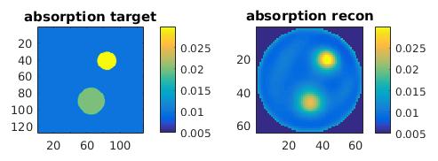

| Image Reconstruction in Diffuse Optical Tomography |
A simple reconstruction exampleIn this example, we reconstruct the absorption distribution inside a circular domain from steady-state boundary data. The complete Matlab script for this tutorial can be found here. Step 1: Generating the forward dataNote: In a real-life application, the forward data would be generated by the measurement instrument. In this example, we substitute the measurement with a simulation. This follows the forward solution shown in Tutorial 2, but for this first reconstruction example we only use a target image for the absorption distribution, while keeping the scattering coefficient constant. Load the target grayscale bitmap, and scale it to the desired absorption coefficients:
bmua_tgt = imread('demo_matlab_fwd2_mua.png');
bmua_tgt = double(bmua_tgt)./255.*0.02 + 0.01; Create a circular FEM mesh for the forward calculation:
rad = 25;
[vtx,idx,eltp] = mkcircle(rad,6,64,4); fwdmesh = toastMesh(vtx,idx,eltp); Map the target parameter distribution to nodal coefficients, using a basis mapper object:
fwdgrd = size(bmua_tgt);
fwdbasis = toastBasis(fwdmesh,fwdgrd); mua = fwdbasis.Map('B->M',bmua_tgt); mus = ones(size(mua))*2.0; We assume a homogeneous value for the refractive index of the scattering medium:
refind = 1.4;
c0 = 0.3; % speed of light in vacuum [mm/ps]
c = c0/refind; % speed of light in the medium ref = ones(size(mua))*refind; % refractive index in FEM basis Compute source and measurement vectors:
nq = 16;
for i=1:nq phi_q = 2*pi*(i-1)/nq; Q(i,:) = rad * [cos(phi_q) sin(phi_q)]; phi_m = 2*pi*(i-0.5)/nq; M(i,:) = rad * [cos(phi_m) sin(phi_m)]; end fwdmesh.SetQM(Q,M); qvec = real(fwdmesh.Qvec('Neumann','Gaussian',2)); mvec = real(fwdmesh.Mvec('Gaussian',2,ref)); Compute the stiffness matrix for the steady-state diffusion problem and solve the linear FEM system:
K = dotSysmat(fwdmesh,mua,mus,ref,0);
Phi = K\qvec; Y = mvec.' * Phi; We now map the forward data to log:
data = reshape(log(Y), [], 1);
data is the log amplitude of the transmitted modulation signal for the steady-state problem considered in this example. Later examples will also cover frequency and time-domain problems. Setting up the inverse solverWe first set up a mesh for the FEM solver. In principle, we could use the same mesh we used for the forward data generation in Step 1. However, to avoid an inverse crime, let's create a different, coarser mesh:
[vtx,idx,eltp] = mkcircle(rad,6,32,2);
mesh = toastMesh(vtx,idx,eltp); n = mesh.NodeCount; We also define a separate basis to express the reconstructed coefficients in. Toast supports a number of different basis types. Here, we use the default basis of a regular pixel basis with bi-linear basis functions:
grd = [32,32];
basis = toastBasis(mesh,grd); Now set up the initial guess for the coefficients (absorption, scattering and refractive index). In this case, we apply homogeneous parameter distributions:
mua = ones(n,1)*0.01;
mus = ones(n,1)*1; ref = ones(n,1)*1.4; Define the source and measurement vectors for the inverse solver mesh:
mesh.SetQM(Q,M);
qvec = mesh.Qvec('Neumann','Gaussian',2); mvec = mesh.Mvec('Gaussian',2,ref); Compute the forward solution for these coefficients:
K = dotSysmat(mesh,mua,mus,ref,0);
proj = reshape(log(mvec.' * (K\qvec)), [], 1); We also need to define a data scaling vector for computation of the objective function. This will become important when using multiple data types (such as log amplitude and phase). For now, a unity dummy vector is sufficient:
sd = ones(size(proj));
Set up the solution vector x of the unknowns we want to reconstruct. In this simple example, we only reconstruct for absorption values, assuming the scattering coefficient to be known. Toast internally operates with the coefficients multiplied with the speed of light (c*mua), so we include that in the solution values. We also want to reconstruct for the log of the mua values, so we perform a parameter transformation to logx:
c = 0.3./ref; % speed of light in the medium [mm/ps]
x = basis.Map('M->S', mua.*c); % Map from mesh to inverse basis logx = log(x); Compute the objective function for the initial parameter estimate:
err0 = objective(data,proj);
err = err0; errp = inf; where objective is an inline function computing the L2-norm of the difference between the measurements and forward model:
function of = objective(data,proj)
of = sum((data-proj).^2); end The iterative inverse solver loopIn the solver loop we use a nonlinear conjugate gradient approach to iteratively minimise the objective function. The loop terminates when one of the stopping criteria is satisfied:
tolcg = 1e-6; % NCG convergence criterion
resetcg = 20; % NCG reset interval step = 1; % initial line search step itrmax = 100; % max. number of iterations itr = 1; % initialise iteration counter while (itr <= itrmax) && (err > tolcg*err0) && (errp-err > tolcg) errp = err; % store previous objective value % body of solver loop to go here end In the body of the solver loop, we first compute the gradient of the objective function with respect to the coefficients, using the toastGradient function:
r = -toastGradient (mesh, basis, qvec, mvec, mua, mus, ref, 0, ...
data, sd, 'method', 'direct'); r = r(1:basis.slen); Note that toastGradient returns the gradient both with respect to absorption and diffusion coefficient. Since in this example we only reconstruct for absorption, we only use the first part of r (1:basis.slen), where basis.slen is the length of the solution vector for a single coefficient. Because we are reconstructing log coefficients, we have to modify the gradient using the chain rule:
r = r .* x;
Now compute an update direction using the nonlinear conjugate gradient method:
if itr > 1
delta_old = delta_new; delta_mid = r' * s; end s = r; if itr == 1 d = s; delta_new = r' * d; else delta_new = r' * s; beta = (delta_new - delta_mid) / delta_old; if mod (itr,resetcg) == 0 || beta <= 0 d = s; % reset CG else d = s + d*beta; end end where the step direction is reset to the gradient direction in regular intervals (resetcg) or when the conjugate gradient update fails (beta ≤ 0). We now perform a one-dimensional inexact line search in direction d, using the toastLineSearch function:
step = toastLineSearch (logx, d, step, err, @ls_objective);
where ls_objective is a callback function invoked by toastLineSearch whenever the objective function of a trial step needs to be computed. The callback function expects a single argument (the solution vector) and must return a scalar (the objective function). We define it as an inline function as follows:
function p = ls_objective(logx)
mua_ = basis.Map('S->M', exp(logx)) ./ c; K_ = dotSysmat(mesh,mua_,mus,ref,0); proj_ = reshape(log(mvec.' * (K_\qvec)), [], 1); of = objective(data,proj_); end Now apply the update to the solution vector:
logx = logx + d*step
x = exp(logx); Convert to absorption values, and map back to the FEM basis:
mua = basis.Map('S->M', smua) ./ c;
Finally, display the current solution. For this, we map mua to a dense regular grid. Note that this is slightly different to the solution vector, which doesn't contain the pixels without support in the mesh domain. This is done with the help of the Map method of the basis mapper object, where 'S' refers to the inverse solution basis, and 'B' refers to a grid basis covering the full bounding box.
mua_img = reshape (basis.Map('S->B', mua), grd);

imagesc(mua_img,[0.005,0.03]); axis equal tight; colorbar |